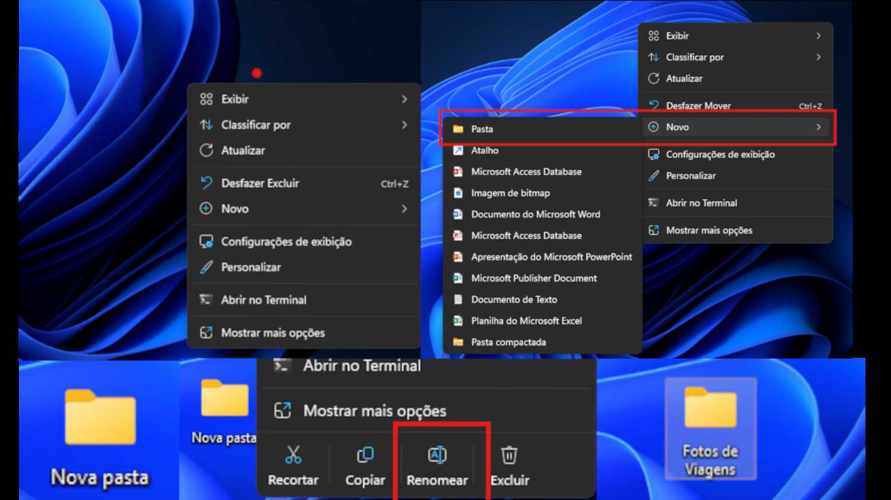

Sumário
- O que são arquivos e pastas
- Tipos comuns de arquivos e extensões
- Como salvar e localizar arquivos
- Como organizar pastas de forma prática
- Armazenamento local x armazenamento em nuvem
- Introdução ao Google Drive, OneDrive ou Dropbox
- Importância do backup e como fazer
- Dicas de boas práticas de organização digital
🗃️ 1. O que são arquivos e pastas?
1.1. Arquivo: é qualquer documento, imagem, vídeo, música ou outro item salvo no computador ou celular.
Exemplos: fotos (.jpg), documentos de texto (.docx), planilhas (.xlsx), vídeos (.mp4).
1.2. Pasta: é como uma "caixa" onde colocamos os arquivos para organizá-los por assunto ou categoria.
Exemplo: uma pasta chamada "Fotos de Viagem" pode conter várias fotos (.jpg) relacionadas a viagens.
Exemplo prático:
🗄️2. Tipos de arquivos e extensões
| Tipo de arquivo | Extensão | Uso comum |
|---|---|---|
| Documento de texto | .docx, .txt | textos, relatórios, cartas |
| Planilha | .xlsx | Tabelas, cálculos, controle financeiro |
| Imagem | .jpg, .png | Fotos, gráficos |
| Arquivos fixos para leitura (ex: contratos) | ||
| apresentações | .pptx | Slides de aula ou reunião |
💾 3. Como salvar e localizar arquivos
3.1. Salvar:
- Sempre escolha um nome claro e um local conhecido.
- Evite nomes genéricos como "documento1".
🔍 3.2 Localizar:
- Use a barra de pesquisa do seu sistema (Windows, Mac ou celular).
- Pesquise pelo nome do arquivo ou tipo (.pdf, .jpg etc.).
📂 4. Como organizar pastas de forma prática
- Crie pastas por assunto (ex: "Trabalho", "Estudos", "Contas").
- Dentro de cada uma, use subpastas se necessário (ex: "Trabalho > Projetos 2025").
- Use nomes simples e diretos.
- Evite salvar tudo na área de trabalho ou na pasta "Downloads".
✅ Dica:
Uma boa organização facilita muito encontrar o que você precisa rapidamente.
💿 5. Armazenamento local x armazenamento em nuvem
| Tipo | Características |
|---|---|
| Local | Os arquivos ficam salvos diretamente no computador, celular ou pendrive |
| Nuvem | os arquivos ficam salvos na internet e podem ser acessados de qualquer dispositivo com internet |
☁️ Exemplos de nuvem: Google Drive, OneDrive, Dropbox
💻 6. Introdução ao uso de armazenamento em nuvem
Google Drive (exemplo mais comum e gratuito):
- Crie uma conta Google (caso não tenha).
- Acesse pelo navegador: drive.google.com
-
Você pode:
- Fazer upload de arquivos e pastas
- Criar arquivos online (Documentos, Planilhas, Apresentações)
- Compartilhar arquivos com outras pessoas
- Acessar de qualquer lugar
💾 7. Importância do backup e como fazer
- Backup significa fazer uma cópia de segurança dos seus dados importantes.
- Pode ser feito:
- Em um pendrive
- Em um HD externo
- Na nuvem (Google Drive, OneDrive)
- Ideal para evitar perda de dados em caso de problemas técnicos, roubo ou exclusão acidental
✅ Dica prática: Faça backups regulares de arquivos importantes (mensal ou semanalmente).
👋🤓 8. Dicas de boas práticas de organização digital
- Use nomes claros nos arquivos.
- Organize por data ou assunto.
- Limpe sua pasta "Downloads" frequentemente.
- Faça backups regularmente.
- Use a nuvem para ter acesso de qualquer lugar.
- Evite deixar muitos arquivos na área de trabalho.